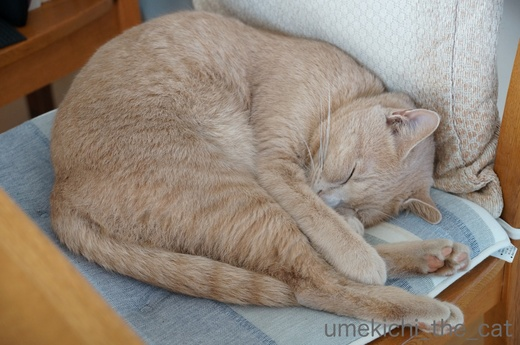
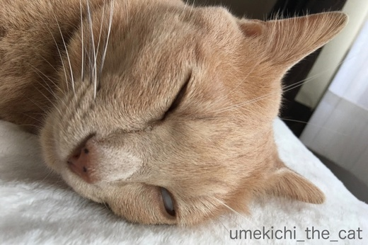
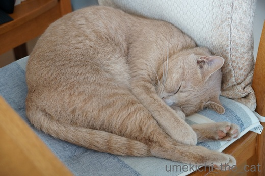
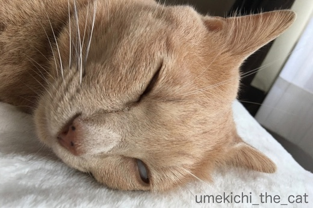

今週末は試練の時 [梅吉]
毎日気ままな梅吉さんは

眠くなったらニンゲンの椅子を占領して丸くなって眠ったり

白目をむいてみたり

ニンゲンを敷き布団の様に使って平べったくなってみたり

気が向いたらおとーさんの手をがぶがぶしたりしていますけどね
今週末は大試練が待っているのですよ。

![[猫]](https://blog.ss-blog.jp/_images_e/101.gif) なぬっ！？
なぬっ！？
今週末は梅吉の年に一度の予防接種と血液検査の日。
最大の試練とは朝食抜きで行かなければならない事( ；∀；)
梅吉には夜ベッドに入る前（毎日だいだい23時頃）にご飯をあげています。
夜中に一度は私を起こし５〜６粒のおやつをおねだり。
おねだりは寝ている私の頭を一方のお手手で「ていてい」してくるのですが
無視しているとエンドレス「ていてい」・・・
しかも起きないでいると腹が立ってくるらしく始めは肉球の腹で優しくしていた「ていてい」に
全開の爪がつき両手で「ほりほり」へと変わって行きます。
はっきりいって寝てなんかいられませんw
この「ていてい→ほりほり」をかわし、朝起きてから病院へ出かけるまで（家を出るのは午前9時過ぎ）を
どうやって過ごさせるかが問題なのです。
夜ゆっくり眠るのはもう諦めました(꒦ິ⌑꒦ີ)
朝起きてからの時間も（おそらく）お怒りのかぶがぶを受けながら耐えるしかないでしょう・・・
みなさま、どうか空腹な梅吉のお怒りが少しでもマイルドなものである様に
祈っていてくださると嬉しいです(꒦ິ⌑꒦ີ)
血液検査もワクチンも無事に済ませたら３連休中は「僕のワンダフル・ライフ」か
京都国立博物館に行きたいわー！
 ↑ガブッと一押し↑
↑ガブッと一押し↑
ペットのおうちに登録すると無料で作ってもらえるIDタグが届きました。
申し込んだのは先月16日だったので3週間近くかかりましたよー。
iPetがスポンサーなのでペット保険の案内も一緒に来ました。
今梅吉の入っている保険とどう違うのかもう一度ちゃんと見てみよう。
梅吉のID番号もなにげにアップしちゃいますw
このIDタグを付けていると万が一迷子になった時
保護してくださった方がペットおうちのHPにアクセスしてID検索。
そして迷子連絡をくださると飼い主に連絡が来る仕組みになっています。
ただ、ペットのID検索の場所がページ真ん中右寄りにちょこんとあるので今ひとつわかりにくい。
できればページ冒頭にど〜んと表示されていると嬉しいのですが。
ご意見しちゃおうかなー。
でも飼い主としては何かあった時の安心材料の一つになる嬉しいシステムです。
IDタグを梅吉の首輪につけて慣れてもらわなくっちゃ。
（あとふた回りくらい小さいIDタグだとなお嬉しかった・・・注文の多い飼い主ですw)
災害や他国からの脅威、我が家の場合は脱走も考えられます。
離れてしまったペットと飼い主がちゃんとまた会える様に
こういうシステムが広く認知されて行くと嬉しいなぁ。

眠くなったらニンゲンの椅子を占領して丸くなって眠ったり

白目をむいてみたり

ニンゲンを敷き布団の様に使って平べったくなってみたり

気が向いたらおとーさんの手をがぶがぶしたりしていますけどね
今週末は大試練が待っているのですよ。

今週末は梅吉の年に一度の予防接種と血液検査の日。
最大の試練とは朝食抜きで行かなければならない事( ；∀；)
梅吉には夜ベッドに入る前（毎日だいだい23時頃）にご飯をあげています。
夜中に一度は私を起こし５〜６粒のおやつをおねだり。
おねだりは寝ている私の頭を一方のお手手で「ていてい」してくるのですが
無視しているとエンドレス「ていてい」・・・
しかも起きないでいると腹が立ってくるらしく始めは肉球の腹で優しくしていた「ていてい」に
全開の爪がつき両手で「ほりほり」へと変わって行きます。
はっきりいって寝てなんかいられませんw
この「ていてい→ほりほり」をかわし、朝起きてから病院へ出かけるまで（家を出るのは午前9時過ぎ）を
どうやって過ごさせるかが問題なのです。
夜ゆっくり眠るのはもう諦めました(꒦ິ⌑꒦ີ)
朝起きてからの時間も（おそらく）お怒りのかぶがぶを受けながら耐えるしかないでしょう・・・
みなさま、どうか空腹な梅吉のお怒りが少しでもマイルドなものである様に
祈っていてくださると嬉しいです(꒦ິ⌑꒦ີ)
血液検査もワクチンも無事に済ませたら３連休中は「僕のワンダフル・ライフ」か
京都国立博物館に行きたいわー！
ペットのおうちに登録すると無料で作ってもらえるIDタグが届きました。
申し込んだのは先月16日だったので3週間近くかかりましたよー。
iPetがスポンサーなのでペット保険の案内も一緒に来ました。
今梅吉の入っている保険とどう違うのかもう一度ちゃんと見てみよう。
梅吉のID番号もなにげにアップしちゃいますw
このIDタグを付けていると万が一迷子になった時
保護してくださった方がペットおうちのHPにアクセスしてID検索。
そして迷子連絡をくださると飼い主に連絡が来る仕組みになっています。
ただ、ペットのID検索の場所がページ真ん中右寄りにちょこんとあるので今ひとつわかりにくい。
できればページ冒頭にど〜んと表示されていると嬉しいのですが。
ご意見しちゃおうかなー。
でも飼い主としては何かあった時の安心材料の一つになる嬉しいシステムです。
IDタグを梅吉の首輪につけて慣れてもらわなくっちゃ。
（あとふた回りくらい小さいIDタグだとなお嬉しかった・・・注文の多い飼い主ですw)
災害や他国からの脅威、我が家の場合は脱走も考えられます。
離れてしまったペットと飼い主がちゃんとまた会える様に
こういうシステムが広く認知されて行くと嬉しいなぁ。

カフェオレ色の梅吉

梅吉 2023年8月10日 永眠


梅吉と出会った譲渡会

犬猫の理由なき殺処分ゼロ
妄想広告
UMEKICHI 光

爆発的に早い！
時々攻撃的！
Thanks to Mr.Boss365
爆発的に早い！
時々攻撃的！
Thanks to Mr.Boss365

梅吉さん私服の寝顔ですね。ペット保険色々ありますね。
我が家はアニコムにはいっていますが今年から腸内フローラ無料検査とか
してくれるのでありがたいです。
by みぃにゃん (2017-10-02 15:28)
食事抜きとは、なんとツライ試練なのでしょう。。。
私でも辛いのに。梅吉さん頑張れ〜！！
by じゅらまろ (2017-10-02 15:29)
あらら、梅吉さんにとってもちぃさんにとっても試練の日がやってくるんですね(*_*)
ここは素直に腕を差し出して心ゆくまでガブガブしてもらうしかないかも(^^;)
どうか梅吉さんもちぃさんも被害が少なく済みますように<(_ _)>
IDタグ、コレ良いですねぇ(^O^)
あっ、でもうちの場合はまず首輪をつけてもらわないとタグつける場所がない(>_<)
by ニッキー (2017-10-02 15:32)
いろいろな寝顔！
見ていて飽きないですよね(*^_^*)
梅吉さんの試練の時！！
ちぃさんがゆっくり眠れて（無理？）
検査結果も問題無いことを祈ります♪
by きぃ (2017-10-02 17:10)
梅吉さん、至福の寝顔ですね！
でも、週末には試練が待っているのですね(^^;)
ちぃさんもゆっくり休めますように・・・(^_^)
by kou (2017-10-02 18:34)
朝ごはん抜き！
諦めて梅吉さんに腕を差し出してあげてください(^▽^;)
うまくやり過ごせるよう祈っています！！
ＩＤタグ、いいですね。
本当にいつ何が起こるかわからないご時世。備えあれば患いなしなんだけれど・・・ニッキーさんところ同様にまず首輪をつけないと・・・(-_-;)
by ゆきち (2017-10-02 19:24)
気持ちよさそうにすやすや眠る梅吉さん、見ているこちらも至福です＾＾
平べったくなるのも可愛い～！
おおっと、週末には試練がっ‥
それは辛いですよねー。
がぶがぶほりほりが控えめでありますように。
梅吉さん、わかって＾＾
by sana (2017-10-02 19:56)
梅吉さん、朝ご飯抜きで血液検査ですか！
それは大変な試練ですね(^^)
by ma2ma2 (2017-10-02 20:12)
平べったくなった梅吉さんがライオンに見えました。
ジャングル大帝のレオみたいです(^^♪
by riverwalk (2017-10-02 21:44)
うちのも一回、朝食抜きの時がありましたが
アピールがすごかったです。^^;
試練、心を鬼にする必要があり辛いですね。
IDタグ、いいですね。これはアイデアですね。
by yes_hama (2017-10-02 22:16)
片白目というか白目でウィンクというかサイコーです!
朝食抜きは「何でもらえないの~?」ってお顔をされるともう可哀想で⋯。ちぃさん頑張って!
by zombiekong (2017-10-03 00:54)
「ていてい→ほりほり」攻撃がいじらしくて
カワイイですね＾＾
最後の写真の牙、いいですね！
梅吉くん、病院頑張ってね。
うちはペット保険には入ってないんですけど、
どうしようか思案中です＾＾；
by マーヤ (2017-10-03 01:27)
これは大変な事になりそうですね。
嵐が無事に過ぎることをお祈りいたします＾＾；
by ぽちの輔 (2017-10-03 06:53)
朝ご飯抜きなんだ！！(・o・)
血液検査だからかぁ…。
王子はもう6歳。検査してもらおうかなぁ…。
先生は｢7歳からで良いでしょう｣というんですけど…(-_-;)
人間敷き布団、これからの季節はお互いに暖かくてイイ〜！
敷き布団サイドには、ちょっと重いのが玉にきず(^^;
by も〜 (2017-10-03 09:04)
梅吉君、ふぁいとー！
ゴハン抜き頑張ったかな？
うちも夜中に「おなかすいたよー」ってやるので
枕元にご飯入れ置いてます(笑)
朝までぐっすりなんて、夢のまた夢ですよねｗ
ペットのおうち、わたしもID検索画面が
分かりづらいと思った！
一緒にご意見しちゃおうか^^
by リュカ (2017-10-03 09:48)
梅吉さん、朝食抜きは辛いですね〜
久しぶりの白目、健在でしたね。
IDタグ、2回り小さい方が良いと思うってことは、かなりの大きさですね。
梅吉さんに負担にならないように小さくしてほしいなっ。
by kiki (2017-10-03 12:08)
週末
なるべく被害が少ないことを祈ります。
で
『僕のワンダフルライフ』が観たいです
（ヨッシーに言ってないか！）
予告を見るとほっこりしそうな…
ワンちゃんもニャンコも好きです。
でもね
我が夫
猫も犬も虫もダメなんですよ
夜の散歩で
ワンちゃん（中型）に会うと
私の横に逃げる。
大型犬だと「あんた先に行ってー」
私を盾にしよる。
蚊がいると薬をむせるほどシューする。
「蚊より人間が死ぬわ」
言ってもダメ。
難儀なやっちゃです。
by ヨッシー (2017-10-03 18:16)
梅吉くん、頑張れ～っ！！
本人は何でご飯を抜かれるのかわかってないから要求してくるのは仕方ないよね。
「ていてい」「ほりほり」攻撃にもその日だけは負けられない！
更なる攻撃もあるかも！！ちぃさんも頑張ってね。
検査が終わって梅吉くんもちぃさんもホッと出来ますように(^-^)
by emi (2017-10-03 19:21)
梅吉君にもちぃさんにも大試練ですね´д` ;
無事終わりますように…
タグのアイデア、いいですね！首輪もしていない我が家は、災害が起きないことを祈るばかりです…
by BillK-ko (2017-10-03 19:52)
みぃにゃんさん＞保険も色々ありますよね＾＾
腸内フローラ検査、梅吉にも受けさせてみたいかも！
じゅらまろさん＞話して解ってくれると助かるんだけどねー( ；∀；)
ま、この日は「おかーさんはひどい人」になりますわww
ニッキーさん＞元気にガブガブしてくれているうちはまだ良いのですが
部屋の隅で恨めしそうな顔をしてじっとされるかと思うと切ないです・・・
でも、ちゃんとした血液検査の結果が知りたいので頑張らねば！です。
IDタグ、首輪に慣れてないとちょっと辛いかも・・・
普段から首輪をしている梅吉もきびしいかもしれません。。。
詳細は後日ご報告します(｀_´)ゞ
きぃさん＞寝顔の百面相です(*>艸<）
あー、残念ながらゆっくりなんて眠れなさそうで・・・
今週末は幸いにも３連休なので梅吉の病院の次に日の朝は
「寝坊してやるー！！」と思っています( ^ω^ ）
血液検査、ちょっとだけドキドキです！
kouさん＞食いしん坊＆がっつき猫の梅吉なので絶食は最大の試練です^^;
病院から帰って来たら昼寝して次の日の朝は寝坊してやるー！って思ってますw
ゆきちさん＞本当に、いくらでもガブガブしてくれて良いのですが
じっと動かなくなったら・・・と想像すると今から切ないです( ；∀；)
IDタグ、首輪に慣れている梅吉でもちょっと厳しくて・・・
これは犬用だなーって思いました。
詳細は後日記事にしようかと思っています。
sanaさん＞平べったい時はひときわブチャイクになるのですが
それが飼い主としては可愛くて・・・♡
顔全体が弛緩しまくるほどリラックスしているんだなーと嬉しくもあります＾＾
週末の試練、話してわかってくれると本当にありがたいんだけど・・・
ma2ma2さん＞ごはん、命！！の梅吉なのでどうなることやら・・です^^;
riverwalkさん＞確かに！サバンナでだらしなく寝そべっているライオンに
そっくりかも！！「レオ」は褒めすぎですよ〜〜〜〜(〃ω〃)
yes_hamaさん＞アズ氏のアピールは穏やかで控えめそうですが
梅吉のアピールはすごいんですよ〜。
空腹で元気がなくなっちゃう可能性も考えられますが・・・
獣医さんには「お怒りが凄かったらごはん食べさせてもいいですよ」
と言われているのですがちゃんとした検査値を知りたいので
心を鬼にして頑張ります！！
zombiekongさん＞片目の白目はお手の物です(^_－)☆
朝食抜き、ガブガブされる方がまだいいな・・・と思っています。
切ない顔をされるのが一番辛い・・・
でも心を鬼にして梅吉と一緒に耐えます！！
マーヤさん＞「ていてい→ほりほり」されているうちに
可愛くて笑っちゃうのですが高速になると結構痛くて(⌒_⌒;
でも肉球のみの時の感触は最高ですー！
保険、ペット貯金、あるいは両方・・・色々な考え方があると思いますが
思い切って保険加入してみました。
まだ使ったことはないのですがそれはそれでありがたいと思っています＾＾
ぽちの輔さん＞本当に、早く終わって欲しい！と思っていますw
も〜さん＞一年前に指摘された中性脂肪の値を見るための絶食です。
梅吉の先生は血液検査には積極的な方なので
絶食は大変だけれど年に一度は検査してもらおうと思っていますよ＾＾
敷き布団は９割おっとがなるのですが重さなんて気にならないそうです。
「梅吉おいでよー」って呼んでますから(*>艸<)
私の敷き布団は幅が足りないのか梅吉がずり落ちちゃいますw
リュカさん＞検査前日の夜はいつにも増して眠れないわ、間違いなく(-_-メ)
幸いにも３連休なので昼寝して寝坊もしてやるー！って思ってますw
ペットのおうちに一緒にご意見しましょう！
実はIDタグ、梅吉が嫌がって付けるのを諦めました。
でもせっかく発行されたIDだからどうにかして役立てたいなと
今手立てを色々思案しています。
もう少しタグが小さくなりませんか？ともご意見してみようかな。
無料なのに文句言うなー！って言われちゃうかしら。
有料でもいいから違う材質の小さなものを作って欲しい。。。
kikiさん＞IDタグ、負担でした・・・( ；∀；)梅吉、拒否る。。。
５円玉ほどの大きさなんですがにゃんこにはちょっと大きいようです。
でも良いシステムなのでなんとかIDは役立てたいと思案中です。
ちょっと予感はしていたのですが、的中でしたー(꒦ິ⌑꒦ີ)
ヨッシーさん＞「僕のワンダフルライフ」あらすじを聞いただけで
涙腺が・・・ハンカチ２枚用意していこうと思っています＾＾
虫が嫌い、は激しく同意しますが犬猫は、ねえ。可愛いのに(･◇･)
でも「好きじゃない」と言う方こそ一度飼うとメロメロになる事が多いので
強行突破して飼っちゃうと言うのもありかもしれませんよー＾＾
ご主人、ヨッシーさんを頼りにされているのですね。
そんなヨッシーさんを殺虫剤であの世に送ってはアカンで(*>艸<)
BillK-koさん＞三連休の初日に大仕事なのでそのあとの二日は
抜け殻になっちまってるかもしれません^^;
真っ白になっちまったぜ・・・・
タグ、、、、梅吉に嫌がられたーーーー( ；∀；)
でもIDは何とか生かしたいと思っています。
by ちぃ (2017-10-03 21:36)
食事抜きか～辛いねそれは辛いね梅吉くん。帰ったら倍食べさせてもらってね。
by palpal (2017-10-04 15:43)
palpalさん＞意地悪ーーーー！って思われるのが辛いわぁ・・・( ；∀；)
病院から帰ったら久しぶりにウェットを振舞っちゃおうと思っています！！
by ちぃ (2017-10-04 17:54)
3枚目の梅吉くん、ちょっとシロクマっぽいです(｡-_-｡)きゃわわ。
いやいや、ウチにもヒグマいますので。
きっとネコも、クマに近いものがあるのかもしれない。
（ないかもしれない・・・）
検査前の食事抜き、理解してくれないだけにかわいそうで辛いですよね^^;
我が家も、早朝から顔を「トントン」起こしにかかります。。
by Ja-Kou66 (2017-10-05 01:22)
Ja-Kou66さん＞シロクマだったりイタチだったり
プレーリードッグだったり色々なんですよ〜＾＾
ヒグマもいいですね〜Ｏ(≧▽≦)Ｏ 思いっきりモフりたい！！
やっぱり朝はゆっくり寝てなんていられないですよね・・・
ヨロヨロと起きてご飯を差し上げて、二度寝もできない時間だから
ヨロヨロと朝の身支度をしていたら・・・
梅吉が二度寝中だったりします( ；∀；)
by ちぃ (2017-10-05 14:51)
沒有醫生的處方
cialis side effects http://cialisvipsale.com/ Discount cialis
by Generic for cialis (2018-04-14 14:30)